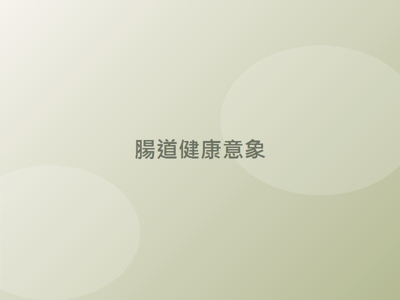
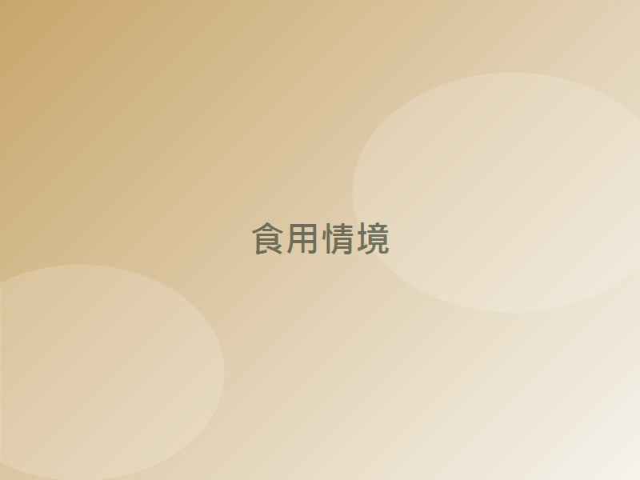

外食與精緻飲食
高油、高糖、纖維不足，好菌缺乏養分。
現代生活步調快，三餐老是在外、蔬果吃太少、又常常熬夜和壓力大——這些日常，正悄悄改變我們腸道裡的菌相平衡。當壞菌慢慢佔了上風，好菌不夠用，身體就會用各種「小狀況」提醒你該關心一下了。
高油、高糖、纖維不足，好菌缺乏養分。
作息混亂會直接影響腸道菌叢生態。
在消滅壞菌的同時，好菌也容易一起受影響。
隨著年紀，體內好菌（如雙歧桿菌）會自然減少。
換季時體質敏感，腸道更需要支援。
腸道被稱為人體的「第二大腦」，超過七成的免疫細胞都駐紮在這裡。照顧好腸道菌相，就是替每天的精神、消化與防護力打好基礎。

益生菌不像維生素可以儲存，它會隨著代謝、飲食與作息自然減少。想維持腸道裡好菌的優勢，關鍵在於「持續、足量」地補充，而不是偶爾想到才吃一次。
雖然優格、泡菜等發酵食物含有益生菌，但菌種單一、菌量有限，也容易在胃酸的考驗下大量折損。透過經過設計的益生菌產品，能更穩定地把足量好菌送到該去的地方。
腸道菌相平衡，不只關係到排便順暢與消化吸收，也與免疫調節、情緒和體質息息相關。補充益生菌，是一件「現在做、長期受用」的小投資。
葡眾企業成立於 1993 年，是台灣深耕多年的保健通路品牌，產品由母公司葡萄王生技研發製造。葡萄王專注於微生物發酵與菌株研發超過半世紀，是台灣益生菌領域的代表性企業之一。我們相信，真正能讓人安心吃下肚的好菌，來自扎實的研究與一絲不苟的製程。
葡萄王長年深耕菌種研發，擁有台灣規模名列前茅的菌種庫（逾 4,000 株），是自家配方的源頭活水。
研發益生菌四重包埋專利技術（台灣專利 I805932、M602044），為好菌穿上防護衣，提升儲存安定性與胃酸耐受度。
設有「生物科技研究所」與「創新研發中心」，累積多項國內外專利，並搭配臨床實證，讓配方有所本。
康爾喜系列通過 SNQ 國家品質標章（生策會嚴格審查），把關每一條好菌的品質。
益生菌最大的挑戰，是要活著抵達消化道。葡萄王的「四重包埋」技術，由外而內結合抗氧化防護層、益生質層、活性維護層與益生菌層，層層守護，協助活菌通過外部環境、胃酸與膽鹼的考驗，順利抵達該發揮作用的地方。
康爾喜（N）乳酸菌顆粒是葡眾現行的主力益生菌，採複合式乳酸菌配方，集結 13 株精選菌種，再以專利包埋技術為好菌加上防護，並額外添加寡醣（益生質）與木瓜酵素、鳳梨酵素，幫助維持消化道機能、促進營養吸收。一條一包、隨身好攜帶，全家大小都適合。
| 產品名稱 | 康爾喜（N）乳酸菌顆粒（綠色包裝） |
|---|---|
| 包裝規格 | 1.5 公克 × 90 條／盒 |
| 菌數 | 約 700 億／條 |
| 菌種數 | 13 株複合乳酸菌 |
| 特色添加 | 寡醣（益生質）、木瓜酵素、鳳梨酵素 |
| 劑型 | 顆粒粉末（可直接食用） |
| 建議用量 | 每日 3 條 |
| 品質標章 | SNQ 國家品質標章 |
小提醒：康爾喜系列另有「康爾喜乳酸菌顆粒（黃色包裝）」，菌量約 1000 億／條，主打消化道順暢；而綠色包裝的「康爾喜N」則額外加入消化酵素，主打體質調整與消化機能。本網頁以康爾喜N（綠色）為主角介紹。
補充說明：早期經典產品「康貝兒」因相關法規調整，已於 2019 年停產停售，康爾喜N 即為延續其精神的升級配方。
市面上益生菌百百種，到底差在哪？我們整理了選擇康爾喜N 的幾個理由，讓你買得安心、吃得明白。
13 株菌種涵蓋腸道保健與體質調整兩大方向，不是單打獨鬥，而是團隊作戰，照顧得更全面。
每條約 700 億活菌，份量實在，讓每天的補充都有感。
四重包埋技術為好菌穿防護衣，撐過胃酸與膽鹼的考驗，把活菌送到對的地方。
額外添加寡醣餵養好菌、木瓜與鳳梨酵素幫助分解食物，好菌與消化一次照顧。
來自葡萄王半世紀發酵科技與自有菌種庫，並取得 SNQ 國家品質標章，來源清楚、製程嚴謹。
無需配水也能直接吃，口感溫和，從長輩到孩子都容易接受，方便天天持續。
選擇益生菌，看的是「菌種對不對、菌量夠不夠、能不能活著到腸道、做得夠不夠用心」。康爾喜N，正是把這幾件事都放在心上的選擇。
以下為康爾喜N（綠色包裝）所含菌種與其常見的保健方向。
| 菌種 | 常見保健方向 |
|---|---|
| Bifidobacterium lactis（比菲德氏菌） | 協助調整代謝 |
| Lactobacillus acidophilus（嗜酸乳桿菌） | 協助調整代謝 |
| Lactobacillus casei（乾酪乳桿菌） | 幫助維持防護力 |
| Lactobacillus brevis（短乳桿菌） | 維持消化道機能、促進食慾，並有助營養吸收 |
| Bifidobacterium bifidum（兩歧雙歧桿菌） | 協助維持代謝機能 |
| Lactobacillus plantarum（植物乳桿菌） | 維持消化道順暢 |
| Lactobacillus rhamnosus GG（鼠李糖乳桿菌） | 調節腸胃蠕動、維持菌叢平衡 |
| Lactobacillus reuteri（洛德乳桿菌） | 穩定腸道菌相、維持腸胃道功能 |
| Bifidobacterium longum（長雙歧桿菌） | 維持腸道菌叢生態平衡、幫助消化順暢 |
| Leuconostoc mesenteroides subsp. cremoris | 促進健康菌相 |
| Bifidobacterium infantis（嬰兒雙歧桿菌） | 幫助維持防護力 |
| Pediococcus pentosaceus（戊糖片球菌） | 協助維持體態 |
| Bifidobacterium adolescentis（青春雙歧桿菌） | 協助消化、維持排便順暢 |
以上為菌種一般常見的研究方向，個人體質與感受不同，非療效保證。
一天 3 條，可分次食用。
一般建議於早餐前空腹或睡前食用，幫助好菌定殖。
可直接倒入口中，或搭配 40°C 以下常溫／冷水 一起服用。

請存放於陰涼乾燥處，避免陽光直射與高溫潮濕；開封後請儘快食用完畢。
三餐老是在外、蔬果吃不夠的外食族
壓力大、作息不規律的上班族與學生
想維持消化道順暢、排便不順的困擾者
體質敏感、換季容易不舒服的過敏體質者
體內好菌自然減少的銀髮族
想替全家打好健康基礎的家庭採購者
溫馨提醒：孕婦、嬰幼兒、正在服藥或患有疾病者，食用前建議先諮詢醫師或專業人員。
可以。益生菌會隨代謝自然流失，持續且足量補充，才更能維持腸道好菌的優勢。它屬於日常保健食品，並非藥物。
一般建議早餐前空腹或睡前食用，幫助好菌順利定殖；搭配 40°C 以下的水一起服用即可。
建議每日 3 條，可視個人狀況分次食用。
康爾喜N 為顆粒劑型、口感溫和，全家大小多可食用。但嬰幼兒、孕婦或正在服藥者，建議先諮詢專業人員。
請避免熱水（40°C 以上會破壞活性）。可直接食用或配常溫／冷水；如要配牛奶，建議用常溫且儘快飲用。
康貝兒已停產停售；康爾喜（黃色）菌量較高、主打消化道順暢；康爾喜N（綠色）額外添加消化酵素，主打體質調整與消化機能。
每個人體質與生活習慣不同，益生菌講求持續累積，建議至少規律食用一段時間，並搭配均衡飲食與良好作息。
康爾喜N 為葡眾直銷通路產品，可透過葡眾會員或官方管道購買，以確保來源與品質。（請於此處放置你的聯絡或會員資訊）